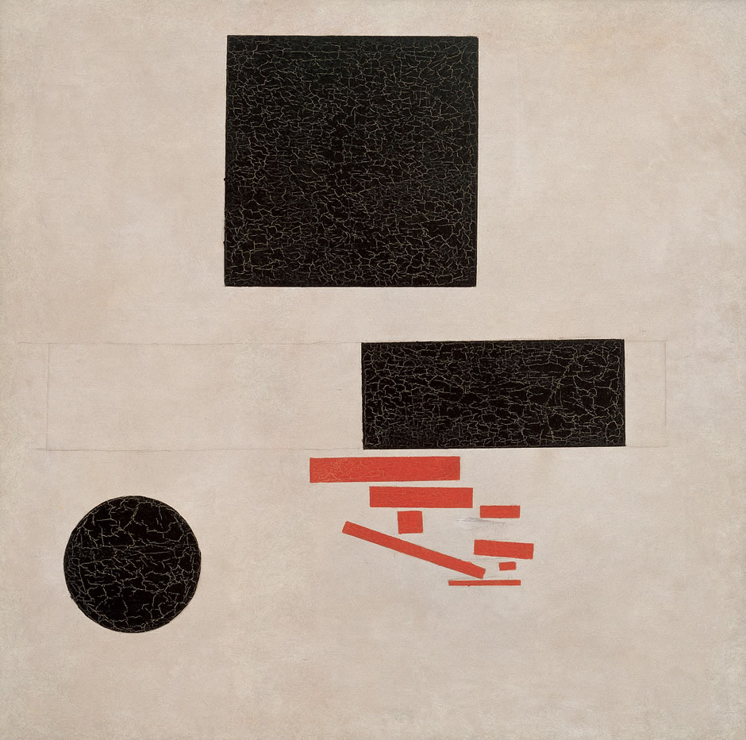

Kazimir Malevich was a Ukrainian painter and art theorist known for founding the avant-garde Suprematist art movement and pionerring in geometric abstract art. He studied at the Moscow School of Painting, Sculpture, and Architecture from 1904-1910, and founded Suprematism in 1915, which was the same year that he painted the Suprematist Composition that is the basis of this composition. He also painted the first version of Black Square during that year, a painting that would go on to become and icon of his style.
Suprematist Composition 1915